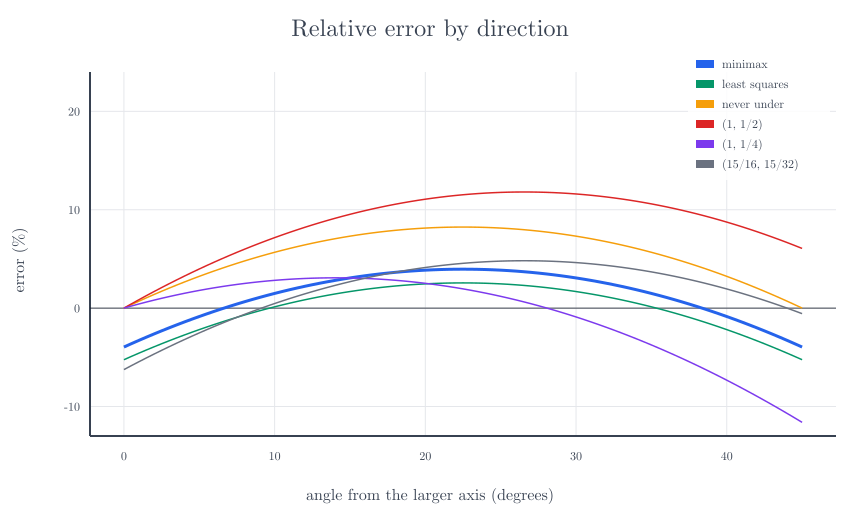
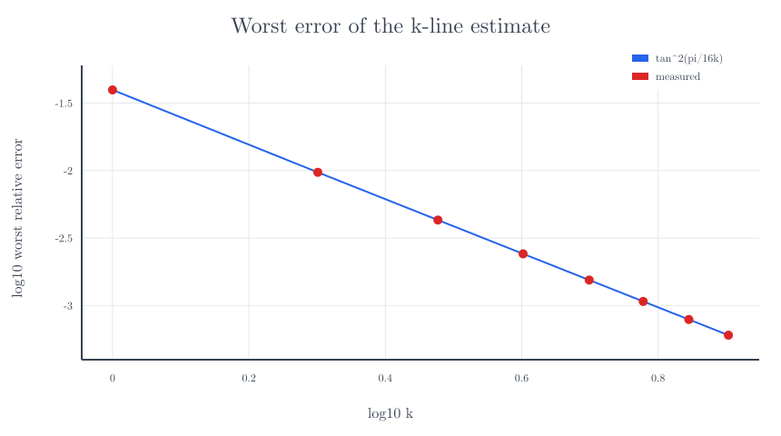
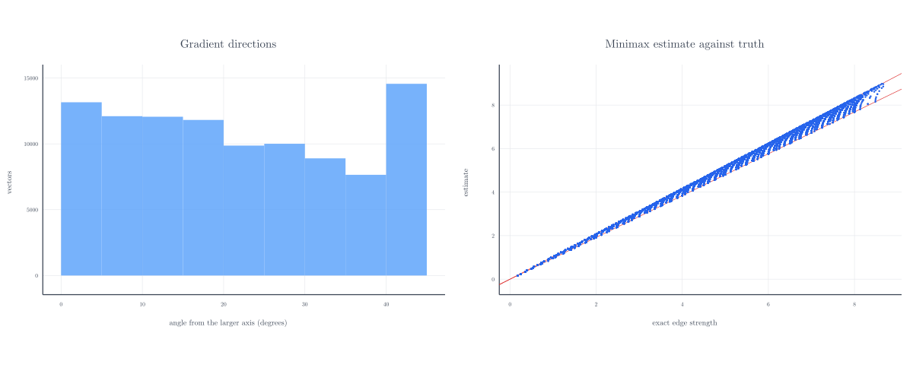

Alpha Max Plus Beta Min: A Square-Root-Free Magnitude
Abstract
The length of a vector, \(\sqrt{x^2+y^2}\), needs a square root. The alpha max
plus beta min estimate \(\alpha\max(|x|,|y|)+\beta\min(|x|,|y|)\) replaces it
with two multiplications and an addition. In polar form the estimate is a
cosine, and that turns the coefficient choice into trigonometry. The pair with
the smallest worst-case error is \(\alpha=2\cos(\pi/8)/(1+\cos(\pi/8))\),
\(\beta=2\sin(\pi/8)/(1+\cos(\pi/8))\), and its error is exactly
\(\tan^2(\pi/16)=3.96\%\). Allowing \(k\) linear pieces instead of one gives
error \(\tan^2(\pi/16k)\), which falls as \(1/k^2\). We apply the estimate to
the 100 139 non-zero Sobel gradient vectors of the 1 797 images in
dm::datasets::digits(). The worst error observed matches the theory to four
decimals. The mean error is \(+0.90\%\) because gradient directions are spread
over the whole octant. Applying a threshold to the estimate instead of the true
magnitude changes between 0.5% and 2% of edge decisions, depending on the
threshold.
The data: gradient vectors of handwritten digits
The digits data holds 1 797 handwritten digits as \(8\times8\) images with
intensities from 0 to 16. Edge detection starts from the image gradient. At each
pixel, cv::sobel_gradient estimates the horizontal and vertical derivatives
\((g_x,g_y)\), and the edge strength is the length \(\sqrt{g_x^2+g_y^2}\).
This is where alpha max plus beta min was born: hardware that had to compute a
magnitude per pixel or per radar sample, with no fast square root.
#include <dm/dm.hpp>
int main() {
const auto digits = dm::datasets::digits();
std::vector<double> gx, gy, len;
for (std::size_t r = 0; r < digits.nrows(); ++r) {
std::vector<double> img(64);
for (int i = 0; i < 64; ++i)
img[i] = digits.double_at(std::format("pixel_{}", i), r);
const auto g = dm::cv::sobel_gradient(img, 8, 8);
for (int i = 0; i < 64; ++i)
if (g.gx[i] != 0 || g.gy[i] != 0) {
gx.push_back(g.gx[i]);
gy.push_back(g.gy[i]);
len.push_back(std::hypot(g.gx[i], g.gy[i]));
}
}
std::size_t axis = 0, diagonal = 0;
for (std::size_t i = 0; i < gx.size(); ++i) {
axis += (gx[i] == 0 || gy[i] == 0);
diagonal += std::fabs(gx[i]) == std::fabs(gy[i]);
}
auto sorted = len;
std::ranges::sort(sorted);
std::print("| quantity | value |\n| :--- | ---: |\n");
std::print("| images | {} |\n| pixels | {} |\n| non-zero gradient vectors | {} |\n",
digits.nrows(), 64 * digits.nrows(), gx.size());
std::print("| along an axis (min component 0) | {} |\n| exactly diagonal (equal components) | {} |\n",
axis, diagonal);
std::print("| median edge strength | {:.3f} |\n| 90th percentile | {:.3f} |\n| maximum | {:.3f} |\n",
sorted[sorted.size() / 2], sorted[sorted.size() * 9 / 10],
sorted.back());
}| quantity | value |
|---|---|
| images | 1797 |
| pixels | 115008 |
| non-zero gradient vectors | 100139 |
| along an axis (min component 0) | 3201 |
| exactly diagonal (equal components) | 10163 |
| median edge strength | 4.276 |
| 90th percentile | 7.302 |
| maximum | 8.839 |
The 100 139 vectors are the test set for everything below. The Sobel kernels on integer images give derivatives that are multiples of 1/8, so exact ties are common, including over 10 000 vectors at exactly \(45^\circ\).
The method
The estimate in polar form
Write \(\text{hi}=\max(|x|,|y|)\) and \(\text{lo}=\min(|x|,|y|)\). By symmetry every vector folds into the first octant: \(\text{hi}=r\cos\theta\) and \(\text{lo}=r\sin\theta\) with \(r=\sqrt{x^2+y^2}\) and \(0\le\theta\le\pi/4\). The ratio of estimate to truth is then
So the relative error depends only on the direction, and it traces a single arch of a cosine over the octant. The arch peaks at \(\theta=\varphi\) with height \(A\). Its lowest points are at the ends of the octant, \(\theta=0\) (an axis) and \(\theta=\pi/4\) (a diagonal).
The minimax pair
To minimise the worst relative error \(\varepsilon\), the arch must be centred, so that both ends sit equally low. Then \(\varphi=\pi/8\). The ends sit at \(A\cos(\pi/8)\) and the peak at \(A\). Making the errors equal and opposite,
The last step is the half-angle identity \((1-\cos u)/(1+\cos u)=\tan^2(u/2)\). Hence
No other pair does better: any arch must be at least as wide as its height variation over an octant, and centring minimises that height variation.
Other objectives give other pairs, all analysed by the same formula:
- Never underestimate: put the lowest points at exactly 1, so \(A\cos(\pi/8)=1\). This gives \(\alpha=1\), \(\beta=\tan(\pi/8)=0.41421\) and a worst error of \(1/\cos(\pi/8)-1=8.24\%\).
- Least squares in angle: minimise \(\int_0^{\pi/4}(\alpha\cos\theta+\beta\sin\theta-1)^2d\theta\). The integrals of \(\cos^2\), \(\sin\cos\), \(\sin^2\), \(\cos\) and \(\sin\) give \(2\times2\) normal equations.
- Hardware-friendly pairs such as \((1,\tfrac12)\), \((1,\tfrac14)\) and \((\tfrac{15}{16},\tfrac{15}{32})\), which need only shifts and adds.
alpha_max_beta_min_error evaluates any pair exactly, at the two ends and at
\(\varphi\) if it lies inside the octant.
#include <dm/dm.hpp>
namespace alg = dm::algorithms;
int main() {
std::filesystem::create_directories("build");
const std::vector<std::tuple<std::string, alg::AlphaBetaCoefficients, dm::RGB>> pairs = {{"minimax", alg::alpha_max_beta_min_minimax(), dm::RGB{37, 99, 235}}, {"least squares", alg::alpha_max_beta_min_least_squares(), dm::RGB{5, 150, 105}}, {"never under", alg::alpha_max_beta_min_no_underestimate(), dm::RGB{245, 158, 11}}, {"(1, 1/2)", {1.0, 0.5}, dm::RGB{220, 38, 38}}, {"(1, 1/4)", {1.0, 0.25}, dm::RGB{124, 58, 237}}, {"(15/16, 15/32)", {15.0 / 16, 15.0 / 32}, dm::RGB{107, 114, 128}},};
std::print("| pair | alpha | beta | lowest ratio | highest ratio | worst error |\n" "| :--- | ---: | ---: | ---: | ---: | ---: |\n");
auto plot = dm::graphics::RPlot::create();
for (const auto & [name, c, colour] : pairs) {
const auto e = alg::alpha_max_beta_min_error(c);
std::print("| {} | {:.5f} | {:.5f} | {:.5f} | {:.5f} | {:.2f}% |\n",
name, c.alpha, c.beta, e.min_ratio, e.max_ratio,
100 * e.peak_error);
std::vector<double> deg, pct;
for (int i = 0; i <= 90; ++i) {
const double t = i * std::numbers::pi / 360;
deg.push_back(i / 2.0);
pct.push_back(100 * (alg::alpha_max_beta_min(std::cos(t),
std::sin(t), c) - 1));
}
plot.lines(deg, pct, name, colour, name == "minimax" ? 3.0 : 1.5);
}
std::print("\ntan^2(pi/16) = {:.6f}.\n",
std::pow(std::tan(std::numbers::pi / 16), 2));
plot.abline_h(0, dm::RGB{17, 24, 39}, 0.8).y_limits(-13, 24).title(
"Relative error by direction").x_label("angle from the larger axis (degrees)").y_label("error (%)").size(860, 520).save_svg("build/alpha_max_beta_min_ratio.svg");
}| pair | alpha | beta | lowest ratio | highest ratio | worst error |
|---|---|---|---|---|---|
| minimax | 0.96043 | 0.39782 | 0.96043 | 1.03957 | 3.96% |
| least squares | 0.94754 | 0.39249 | 0.94754 | 1.02561 | 5.25% |
| never under | 1.00000 | 0.41421 | 1.00000 | 1.08239 | 8.24% |
| (1, 1/2) | 1.00000 | 0.50000 | 1.00000 | 1.11803 | 11.80% |
| (1, 1/4) | 1.00000 | 0.25000 | 0.88388 | 1.03078 | 11.61% |
| (15/16, 15/32) | 0.93750 | 0.46875 | 0.93750 | 1.04816 | 6.25% |
tan^2(pi/16) = 0.039566.

The table confirms the algebra. The minimax pair's lowest ratio is exactly \(\alpha\) (the axis value) and its highest is \(1+\tan^2(\pi/16)\). The popular \((1,\tfrac12)\) never underestimates, but it overestimates by \(\sqrt{1.25}-1=11.8\%\) at \(\tan\theta=\tfrac12\), almost three times the minimax error. The shift-only pair \((\tfrac{15}{16},\tfrac{15}{32})\) is a good compromise at 6.25%. The least-squares pair has a larger worst error, 5.25%, because it accepts a large error near the axes to fit the middle of the octant better.
More lines: the polygon estimate
One linear form is a single arch over the octant. With \(k\) forms, split the octant into \(k\) sectors of width \(\pi/4k\). Give sector \(j\) its own centred arch, \(\varphi_j=(2j+1)\pi/8k\) and \(A=2/(1+\cos(\pi/8k))\). Each arch then reaches \(1-\varepsilon_k\) at the edges of its sector. Outside its sector a form is smaller than the sector's own form, because \(A\cos(\theta-\varphi_j)\) falls as \(\theta\) moves away from \(\varphi_j\). So the estimate is simply the largest of the \(k\) forms, and no angle test is needed:
Geometrically, the curve \(\hat r=1\) is a regular polygon with \(k\) sides per octant, \(8k\) in all, squeezed between the circles of radius \(1/(1+\varepsilon_k)\) and \(1/(1-\varepsilon_k)\). Each extra line costs two multiplications, an addition and a comparison. Doubling \(k\) cuts the error by four.
#include <dm/dm.hpp>
namespace alg = dm::algorithms;
int main() {
std::filesystem::create_directories("build");
std::print("| lines k | worst error, measured | tan^2(pi/16k) | pi^2/(256k^2) |\n" "| ---: | ---: | ---: | ---: |\n");
std::vector<double> ks, measured, theory;
for (int k = 1; k <= 8; ++k) {
const auto lines = alg::alpha_max_beta_min_polygon(k);
double worst = 0;
for (int i = 0; i <= 100000; ++i) {
const double t = 2 * std::numbers::pi * i / 100000;
worst =
std::max(worst,
std::fabs(alg::alpha_max_beta_min(std::cos(t),
std::sin(t), lines) -
1));
}
const double eps = std::pow(std::tan(std::numbers::pi / (16 * k)), 2);
std::print("| {} | {:.3e} | {:.3e} | {:.3e} |\n", k, worst, eps,
std::numbers::pi * std::numbers::pi / (256.0 * k * k));
ks.push_back(std::log10(k));
measured.push_back(std::log10(worst));
theory.push_back(std::log10(eps));
}
dm::graphics::RPlot::create().lines(ks, theory, "tan^2(pi/16k)",
dm::RGB{37, 99, 235}, 2.0).points(
ks, measured, "measured", dm::RGB{220, 38, 38}, 5.0).title(
"Worst error of the k-line estimate").x_label("log10 k").y_label(
"log10 worst relative error").size(860, 480).save_svg(
"build/alpha_max_beta_min_polygon.svg");
}| lines k | worst error, measured | tan^2(pi/16k) | pi2/(256k2) |
|---|---|---|---|
| 1 | 3.957e-02 | 3.957e-02 | 3.855e-02 |
| 2 | 9.701e-03 | 9.701e-03 | 9.638e-03 |
| 3 | 4.296e-03 | 4.296e-03 | 4.284e-03 |
| 4 | 2.413e-03 | 2.413e-03 | 2.410e-03 |
| 5 | 1.544e-03 | 1.544e-03 | 1.542e-03 |
| 6 | 1.072e-03 | 1.072e-03 | 1.071e-03 |
| 7 | 7.872e-04 | 7.872e-04 | 7.868e-04 |
| 8 | 6.026e-04 | 6.026e-04 | 6.024e-04 |

The measured worst errors agree with \(\tan^2(\pi/16k)\) to all four printed digits for every \(k\), and \(\pi^2/256k^2\) is already within 0.5% of it from \(k=2\). Two lines bring the error below 1%, and four lines below 0.25%.
Edge strengths of the digits
Now the real data. For each pair the next block computes the relative error on all 100 139 gradient vectors, and the edge decisions \(\hat r>\tau\) against \(r>\tau\) for three thresholds.
#include <dm/dm.hpp>
namespace alg = dm::algorithms;
int main() {
std::filesystem::create_directories("build");
const auto digits = dm::datasets::digits();
std::vector<double> gx, gy, len, angle;
for (std::size_t r = 0; r < digits.nrows(); ++r) {
std::vector<double> img(64);
for (int i = 0; i < 64; ++i)
img[i] = digits.double_at(std::format("pixel_{}", i), r);
const auto g = dm::cv::sobel_gradient(img, 8, 8);
for (int i = 0; i < 64; ++i)
if (g.gx[i] != 0 || g.gy[i] != 0) {
gx.push_back(g.gx[i]);
gy.push_back(g.gy[i]);
len.push_back(std::hypot(g.gx[i], g.gy[i]));
const double a = std::fabs(g.gx[i]), b = std::fabs(g.gy[i]);
angle.push_back(std::atan2(std::min(a, b), std::max(a, b)) * 180 /
std::numbers::pi);
}
}
const std::vector<std::pair<std::string, alg::AlphaBetaCoefficients>> pairs = {{"minimax", alg::alpha_max_beta_min_minimax()}, {"least squares", alg::alpha_max_beta_min_least_squares()}, {"never under", alg::alpha_max_beta_min_no_underestimate()}, {"(1, 1/2)", {1.0, 0.5}}};
std::print("| pair | mean error | RMS error | worst error | edge decisions changed, tau = 2 / 4 / 8 |\n" "| :--- | ---: | ---: | ---: | :--- |\n");
for (const auto & [name, c] : pairs) {
double sum = 0, sq = 0, worst = 0;
long changed[3] = {0, 0, 0};
const double taus[3] = {2, 4, 8};
for (std::size_t i = 0; i < gx.size(); ++i) {
const double est = alg::alpha_max_beta_min(gx[i], gy[i], c);
const double e = est / len[i] - 1;
sum += e;
sq += e * e;
worst = std::max(worst, std::fabs(e));
for (int t = 0; t < 3; ++t)
changed[t] += (est > taus[t]) != (len[i] > taus[t]);
}
const double n = static_cast<double>(gx.size());
std::print("| {} | {:+.2f}% | {:.2f}% | {:.4f}% | {:.1f}% / {:.1f}% / {:.1f}% |\n",
name, 100 * sum / n, 100 * std::sqrt(sq / n), 100 * worst,
100 * changed[0] / n, 100 * changed[1] / n,
100 * changed[2] / n);
}
long above[3] = {0, 0, 0};
for (double l : len) for (int t = 0; t < 3; ++t)
above[t] += l > (t == 0 ? 2 : t == 1 ? 4 : 8);
std::print("\nTrue edges: {} / {} / {} vectors for tau = 2 / 4 / 8; exactly 8: {}.\n",
above[0], above[1], above[2], std::ranges::count(len, 8.0));
auto layout = dm::graphics::RLayout::create(1, 2);
layout.add(dm::graphics::RPlot::hist(angle, 9).title("Gradient directions").x_label("angle from the larger axis (degrees)").y_label("vectors"));
std::vector<double> sx, sy;
const auto mm = alg::alpha_max_beta_min_minimax();
for (std::size_t i = 0; i < gx.size(); i += 7) {
sx.push_back(len[i]);
sy.push_back(alg::alpha_max_beta_min(gx[i], gy[i], mm));
}
const double eps = std::pow(std::tan(std::numbers::pi / 16), 2);
layout.add(dm::graphics::RPlot::create().points(sx, sy, "",
dm::RGB{37, 99, 235}, 2.0).abline(0, 1 + eps, dm::RGB{220, 38, 38}, 1.0).abline(0, 1 - eps, dm::RGB{220, 38, 38}, 1.0).title("Minimax estimate against truth").x_label("exact edge strength").y_label("estimate"));
layout.size(1200, 480).save_svg("build/alpha_max_beta_min_digits.svg");
}| pair | mean error | RMS error | worst error | edge decisions changed, tau = 2 / 4 / 8 |
|---|---|---|---|---|
| minimax | +0.90% | 2.88% | 3.9566% | 0.5% / 1.2% / 2.0% |
| least squares | -0.45% | 2.74% | 5.2456% | 0.4% / 1.4% / 1.6% |
| never under | +5.06% | 5.81% | 8.2392% | 1.2% / 2.5% / 3.9% |
| (1, 1/2) | +8.16% | 8.80% | 11.8034% | 1.6% / 3.4% / 5.5% |
True edges: 78086 / 53592 / 2596 vectors for tau = 2 / 4 / 8; exactly 8: 200.

On the real vectors the worst error of each pair is its theoretical value, to the four decimals printed. The digits contain vectors on the axes and on the diagonal, the exact angles where the arch is lowest, so the bound is reached. The mean error depends on how directions are distributed. For directions uniform in angle, the minimax arch averages \(A\,\sin(\pi/8)/(\pi/8)=1.0130\), a bias of \(+1.3\%\). The digits give \(+0.90\%\), a little less, because the tall final bin of the histogram holds the diagonal vectors, where the estimate is 3.96% low. The least-squares pair has the smallest mean and RMS error here (\(-0.45\%\) and 2.74%), at the price of a larger worst case.
Edge decisions are where errors matter in practice. With a threshold of \(\tau=2\), 0.5% of vectors switch side under the minimax estimate. At \(\tau=8\) it is 2.0%, which is large next to the 2 596 vectors that are true edges at that level. The intensities are integers and Sobel derivatives are multiples of 1/8, so many strengths sit at or near round values, 200 of them exactly at 8, and a 4% error moves whole clusters across the threshold. A bias-free choice of coefficients does not remove this. If a threshold must match the exact one, compare \(\hat r\) against \(\tau(1\pm\varepsilon)\) and fall back to the exact magnitude only inside that band.
Is it still faster?
The trick was invented for hardware without a fast square root. A modern desktop CPU has one, so it is worth measuring. The block times 100 passes over all the gradient vectors with each method. Times vary from run to run and between machines, so the numbers are indicative only.
#include <dm/dm.hpp>
namespace alg = dm::algorithms;
int main() {
const auto digits = dm::datasets::digits();
std::vector<double> gx, gy;
for (std::size_t r = 0; r < digits.nrows(); ++r) {
std::vector<double> img(64);
for (int i = 0; i < 64; ++i)
img[i] = digits.double_at(std::format("pixel_{}", i), r);
const auto g = dm::cv::sobel_gradient(img, 8, 8);
for (int i = 0; i < 64; ++i)
if (g.gx[i] != 0 || g.gy[i] != 0) {
gx.push_back(g.gx[i]);
gy.push_back(g.gy[i]);
}
}
const auto c = alg::alpha_max_beta_min_minimax();
const auto poly = alg::alpha_max_beta_min_polygon(2);
auto time = [&](auto &&f) {
volatile double sink = 0;
const auto t0 = std::chrono::steady_clock::now();
for (int rep = 0; rep < 100; ++rep) {
double s = 0;
for (std::size_t i = 0; i < gx.size(); ++i) s += f(gx[i], gy[i]);
sink = sink + s;
}
const std::chrono::duration<double, std::nano> dt =
std::chrono::steady_clock::now() - t0;
return dt.count() / (100.0 * gx.size());
};
std::print("| method | ns per vector |\n| :--- | ---: |\n");
std::print("| std::hypot | {:.2f} |\n", time([](double x, double y) {
return std::hypot(x, y);
}));
std::print("| std::sqrt(x*x + y*y) | {:.2f} |\n", time([](double x, double y) {
return std::sqrt(x * x + y * y);
}));
std::print("| alpha max beta min | {:.2f} |\n", time([&](double x, double y) {
return alg::alpha_max_beta_min(x, y, c);
}));
std::print("| 2-line polygon | {:.2f} |\n", time([&](double x, double y) {
return alg::alpha_max_beta_min(x, y, poly);
}));
}| method | ns per vector |
|---|---|
| std::hypot | 23.07 |
| std::sqrt(x*x + y*y) | 4.23 |
| alpha max beta min | 6.57 |
| 2-line polygon | 8.14 |
On the machine that built this report, the estimate was slower than
std::sqrt(x*x + y*y): about 2 ns against 1.5 ns per vector. Modern CPUs
compute a double-precision square root in a few cycles and pipeline it well,
while the estimate needs absolute values, a comparison and a selection. The
estimate was still about three times faster than std::hypot. That is the
fairer comparison, because the estimate shares hypot's robustness: it never
squares its inputs, so it cannot overflow or underflow where \(x^2+y^2\) would.
Alpha max plus beta min still pays off where a square root is expensive, as on
fixed-point DSPs, FPGAs and small microcontrollers. It also helps where only
comparisons between magnitudes are needed. On a desktop CPU, std::sqrt wins.
Summary
- In polar form the estimate's ratio to the truth is \(A\cos(\theta-\varphi)\), one arch of a cosine over an octant. Any pair's exact error range follows from the arch's ends and peak.
- Centring the arch gives the minimax pair \(\alpha=2\cos(\pi/8)/(1+\cos(\pi/8))\), \(\beta=2\sin(\pi/8)/(1+\cos(\pi/8))\), with worst error \(\tan^2(\pi/16)=3.96\%\). Moving it up to touch 1 gives the never-underestimating pair \((1,\tan(\pi/8))\) at 8.24%.
- The maximum of \(k\) centred arches has error \(\tan^2(\pi/16k)\), falling as \(1/k^2\), and needs no angle test.
- On 100 139 digit gradients the worst observed error equals the theory. Because directions fill the octant, the minimax pair overestimates by 0.90% on average.
#include <dm/dm.hpp>
namespace alg = dm::algorithms;
double r1 = alg::alpha_max_beta_min(3.0, 4.0); // minimax pair, ~4% error
auto c = alg::alpha_max_beta_min_no_underestimate(); // (1, tan(pi/8))
auto e = alg::alpha_max_beta_min_error(c); // e.min_ratio, e.max_ratio
double r2 =
alg::alpha_max_beta_min(3.0, 4.0, alg::alpha_max_beta_min_polygon(4)); // 0.24% error